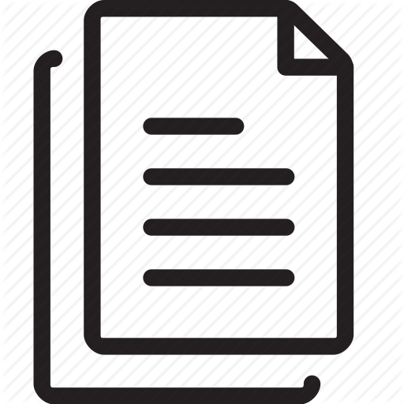

Who am I?
My name is Ghiles Ziat and I am currently a post-doctoral fellow at the Computer Science Laboratory of the University of Paris (IRIF), within the Proofs, Programs and Systems group.
Before that, I did my first post-doctorate at the ISAE-SUPAERO, at DISC under the supervision by Christophe Garion and Xavier Thirioux. We are interested in analysis of hybrid systems using a CP/AI approach.
I did my thesis, in the APR team of LIP6. My supervisors were Antoine Miné and Charlotte Truchet. My research topic was the study of combinations between abstract interpretation and constraint programming. The aim of my thesis was to propose hybrid techniques from these two areas, in the context of problem solving and static analysis. My work is part of of the project ANR coverif.
Publications
-
Automated Random Testing of Numerical Constrained TypesInternational Conference on Principles and Practice of Constraint Programming (CP2021)Ghiles Ziat, Matthieu Dien, Vincent Botbol 
-
Constraint-based Verification of Formation ControlIEEE Conference on Decision and Control (CDC2021)Julien Alexandre Dit Sandretto, Alexandre Chapoutot, Christophe Garion, Xavier Thirioux, Ghiles Ziat,
-
Abstract domains for constraint programming with differential equationsInternational Workshop on Numerical and Symbolic Abstract Domains(NSAD2020)Ghiles Ziat, Olivier Mullier, Julien Alexandre dit Sandretto, Christophe Garion, Alexandre Chapoutot, Xavier Thirioux
-
Combination of Boxes and Polyhedra Abstractions for Constraint SolvingInternational Workshop on Numerical and Symbolic Abstract Domains (NSAD2019)Ghiles Ziat, Alexandre Maréchal Marie Pelleau, Charlotte Truchet, Antoine Miné
-
Finding Solutions by Finding InconsistenciesInternational Conference on Principles and Practice of Constraint Programming(CP2018)Ghiles Ziat, Marie Pelleau, Charlotte Truchet, Antoine Miné,
-
Améliorer la propagation : l'Importance d'être InconsistantJournées Francophones de Programmation par Contraintes(JFPC2017)Ghiles Ziat, Marie Pelleau, Charlotte Truchet, Antoine Miné
-
Mixing Polyedra and Boxes Abstract Domain for Constraint SolvingCP meets Verification Workshop (CPCAV2016)Marie Pelleau, Emmanuel Rauzy, Ghiles Ziat, Charlotte Truchet, Antoine Miné,
-
These de doctorat: A Combination of Abstract Interpretation and Constraint ProgrammingGhiles Ziat,
Softwares
I contribute to the following softwares :
- AbSolute (An abstract domain-based constraint solver: try it)
- geoml (a 2D geometry library for OCaml)
Teaching
- L1, Licence de Sciences et Technologies, Mention Informatique, Paris 6 : Éléments de programmation 1 (1I001)
- L2, Licence de Sciences et Technologies, Mention Informatique, Paris 6 : Fonctions et procédures de calcul (2I008)
- M1, Master d'informatique, Spécialité STL, Paris 6 : Développement d’un langage de programmation